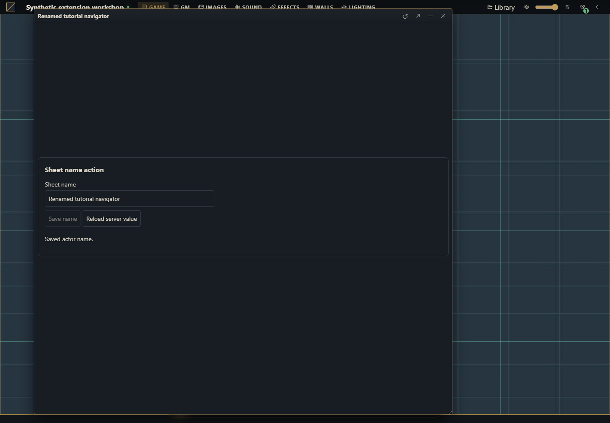
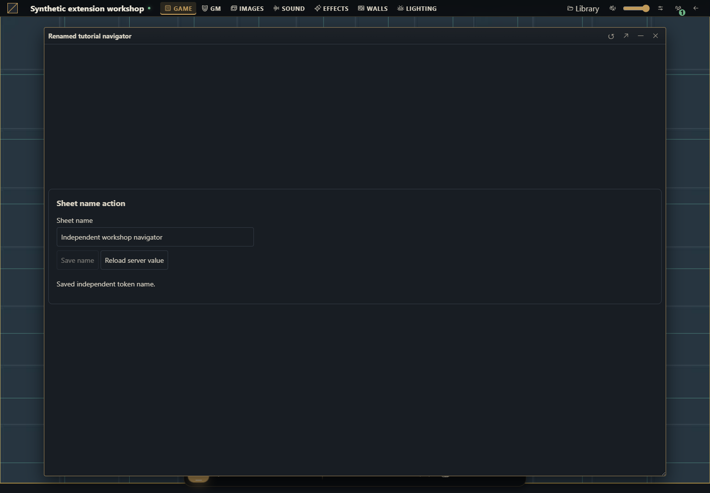

How to create a module that acts on a sheet
Start with an empty folder and ship a working rename action on existing actor and token sheets.


The result you will build
Add a Sheet name action form below the existing sheet. It reads the authorized document, enables editing only when canEdit is true, saves a new name and reloads the committed value. It registers both actor.sheet and token.sheet, so this is an action on real documents rather than a disconnected example label.
Use a disposable campaign on Gravewright 0.3.0, SDK 1.x, an owner account to install and a GM account to activate. Any system can use the actor rename. Independent tokens use the host presentation convention data.token.name; if a system occupies token with a nonobject value, the example refuses that snapshot change. No rulebook content or RPG attribute is added.
1. Create the folder and all five files
Download the complete source ZIP
example.sheet-name/
manifest.json
main.mjs
styles.css
LICENSE.txt
README.mdCreate a folder named example.sheet-name. Save the listings below as UTF-8 files. The package needs no npm, bundler, Python app or server restart. You can also download each original file:
manifest.json · main.mjs · styles.css · LICENSE.txt · README.md
manifest.json
{
"id": "example.sheet-name",
"name": "Sheet name action",
"version": "1.0.0",
"sdk": {
"requires": ">=1.0.0 <2.0.0",
"tested": "1.0.0"
},
"entry": "main.mjs",
"description": "Rename an actor or its independent token from an existing sheet, preserving data and revisions.",
"author": "Gravewright documentation",
"license": "MIT"
}main.mjs
export async function mountSheetName({root,context,api,signal,onDispose}) {
const doc=root.ownerDocument;
const t=key=>api.i18n.t(key);
const el=(tag,text)=>{const node=doc.createElement(tag);if(text)node.textContent=text;return node;};
const form=el('form');form.className='tutorial-sheet-name';
form.setAttribute('aria-label',t('Sheet name action'));
const title=el('h3',t('Sheet name action'));
const label=el('label',t('Sheet name'));
const input=el('input');input.type='text';input.maxLength=120;input.required=true;label.append(input);
const saveButton=el('button',t('Save name'));saveButton.type='submit';
const reloadButton=el('button',t('Reload server value'));reloadButton.type='button';
const status=el('p');status.setAttribute('role','status');status.setAttribute('aria-live','polite');
form.append(title,label,saveButton,reloadButton,status);root.append(form);
onDispose(()=>form.remove());
let current,dirty=false,pending,loading=false,ready=false,generation=0;
const token=context.tokenId?{tokenId:context.tokenId}:{};
function controls(){
const edit=ready&&!loading&&!pending&¤t?.canEdit;
input.disabled=!edit;saveButton.disabled=!edit||!dirty;
reloadButton.disabled=loading||!!pending;
}
function report(error){if(!signal.aborted)status.textContent=error.code||error.message||'unavailable';}
function reject(message){const error=new Error(message);report(error);return Promise.reject(error);}
async function load(){
const ticket=++generation;loading=true;ready=false;controls();
try {
const sheet=await api.actors.sheet(context.actorId,token,{signal});
if(signal.aborted||ticket!==generation)return;
if(typeof sheet.name!=='string'||!sheet.data||typeof sheet.data!=='object'||Array.isArray(sheet.data))throw new Error('invalid_data');
current=sheet;input.value=sheet.name;dirty=false;ready=true;
status.textContent=t(sheet.canEdit?'Server value loaded.':'Read-only sheet.');
} finally {if(ticket===generation&&!signal.aborted){loading=false;controls();}}
}
function save(){
if(pending)return pending;
if(!dirty)return Promise.resolve();
if(!ready||!current?.canEdit)return reject('permission_denied');
const name=input.value.trim();
if(!name||Array.from(name).length>120)return reject(t('Use a name with 1 to 120 characters.'));
const data=structuredClone(current.data),snapshot=!!current.tokenId;
if(snapshot){
if(current.tokenId!==context.tokenId)return reject('stale_context');
if(data.token!==undefined&&(!data.token||typeof data.token!=='object'||Array.isArray(data.token)))return reject(t('This system uses an incompatible token field.'));
data.token={...(data.token||{}),name};
}
const payload={actorId:context.actorId,...token,name:snapshot?current.name:name,
version:current.version,sheetVersion:current.sheetVersion,data};
const requestId=crypto.randomUUID();
pending=(async()=>{
try {
await api.actors.saveSheet(payload,{requestId,signal});
if(signal.aborted)return;
await load();
if(!signal.aborted)status.textContent=t(snapshot?'Saved independent token name.':'Saved actor name.');
} catch(error){
if(!signal.aborted){
if(error.code==='conflict'){
try {await load();if(!signal.aborted)status.textContent=t('Conflict: server value loaded. Review it and edit again.');}
catch(refreshError){ready=false;report(refreshError);}
} else {ready=false;report(error);}
}
throw error;
} finally {pending=undefined;if(!signal.aborted)controls();}
})();
controls();return pending;
}
input.addEventListener('input',()=>{dirty=true;controls();},{signal});
form.addEventListener('submit',event=>{event.preventDefault();void save().catch(()=>{});},{signal});
reloadButton.addEventListener('click',()=>{void load().catch(report);},{signal});
root.closest('.gw-window')?.addEventListener('gravewright:sheet-flush',event=>{
if(pending)event.detail.waitUntil(pending);
else if(dirty)event.detail.waitUntil(Promise.reject(new Error(t('Save the name or reload the server value before closing.'))));
},{signal});
controls();await load();
}
export default {
start({styles,api}){
styles.use('styles.css');
const en={};
const pt={
'Sheet name action':'Ação no nome da ficha','Sheet name':'Nome da ficha',
'Save name':'Salvar nome','Reload server value':'Recarregar valor do servidor',
'Server value loaded.':'Valor do servidor carregado.','Read-only sheet.':'Ficha somente leitura.',
'Saved actor name.':'Nome do ator salvo.','Saved independent token name.':'Nome do token independente salvo.',
'Use a name with 1 to 120 characters.':'Use um nome com 1 a 120 caracteres.',
'This system uses an incompatible token field.':'Este sistema usa um campo token incompatível.',
'Conflict: server value loaded. Review it and edit again.':'Conflito: valor do servidor carregado. Revise e edite novamente.',
'Save the name or reload the server value before closing.':'Salve o nome ou recarregue o valor do servidor antes de fechar.'
};
for(const key of Object.keys(pt))en[key]=key;
api.i18n.register({en,'pt-BR':pt});
},
register({register}){
register('actor.sheet',{mode:'augment',mount:mountSheetName});
register('token.sheet',{mode:'augment',mount:mountSheetName});
},
stop(){}
};styles.css
[data-module-id="example.sheet-name"] .tutorial-sheet-name { padding: var(--space-4); margin: var(--space-2); border: 1px solid var(--border); border-radius: var(--radius-md); background: var(--surface); color: var(--text); font: 14px/1.5 system-ui, sans-serif; }
[data-module-id="example.sheet-name"] .tutorial-sheet-name h3 { font-size: 16px; margin: var(--space-0) var(--space-0) var(--space-3); }
[data-module-id="example.sheet-name"] .tutorial-sheet-name label { display: block; }
[data-module-id="example.sheet-name"] .tutorial-sheet-name input { display: block; box-sizing: border-box; width: 100%; max-width: 400px; }
[data-module-id="example.sheet-name"] .tutorial-sheet-name :is(input,button) { font: inherit; padding: var(--space-2); margin: var(--space-1) var(--space-1) var(--space-1) var(--space-0); border: 1px solid var(--border); border-radius: var(--radius-sm); background: var(--surface); color: inherit; }
[data-module-id="example.sheet-name"] .tutorial-sheet-name :focus-visible { outline: 2px solid var(--accent); outline-offset: 2px; }
[data-module-id="example.sheet-name"] .tutorial-sheet-name [role=status] { overflow-wrap: anywhere; }LICENSE.txt
MIT License
Copyright (c) 2026 Gravewright contributors
Permission is hereby granted, free of charge, to any person obtaining a copy
of this software and associated documentation files (the "Software"), to deal
in the Software without restriction, including without limitation the rights
to use, copy, modify, merge, publish, distribute, sublicense, and/or sell
copies of the Software, and to permit persons to whom the Software is
furnished to do so, subject to the following conditions:
The above copyright notice and this permission notice shall be included in all
copies or substantial portions of the Software.
THE SOFTWARE IS PROVIDED "AS IS", WITHOUT WARRANTY OF ANY KIND, EXPRESS OR
IMPLIED, INCLUDING BUT NOT LIMITED TO THE WARRANTIES OF MERCHANTABILITY,
FITNESS FOR A PARTICULAR PURPOSE AND NONINFRINGEMENT. IN NO EVENT SHALL THE
AUTHORS OR COPYRIGHT HOLDERS BE LIABLE FOR ANY CLAIM, DAMAGES OR OTHER
LIABILITY, WHETHER IN AN ACTION OF CONTRACT, TORT OR OTHERWISE, ARISING FROM,
OUT OF OR IN CONNECTION WITH THE SOFTWARE OR THE USE OR OTHER DEALINGS IN THE
SOFTWARE.README.md
Sheet name action, target Gravewright 0.3.0 / SDK 1.x.
ZIP the contents of this folder, with manifest.json directly at its root.
An installation owner reviews and installs the ZIP under Modules, Install module,
Install from ZIP. A GM activates example.sheet-name version 1.0.0 in the campaign.
Open an actor or token sheet and find Sheet name action below the existing sheet.
Save native sheet edits first. Click Reload server value, edit Sheet name, then
Save name. Do not edit the native form and this panel simultaneously. Every save
sends both revisions read by actors.sheet and preserves all other JSON data.
Snapshot tokens use data.token.name; linked tokens rename their actor. An existing
nonobject data.token is rejected rather than replaced. The server checks access.
Closing waits for a pending save. An unsaved name blocks closing until Save name
or Reload server value. Conflicts reload the server value and never retry a write.
On an uncertain network failure, reload before editing again. Deactivation aborts
pending client work but cannot undo a write the server already committed.
See the bilingual tutorial-sheet-module guide for complete instructions and tests.2. Build a ZIP with the manifest at its root
From the directory containing example.sheet-name, run one of these commands. The output ZIP is a sibling of the source folder; it is never included inside itself.
Compress-Archive -LiteralPath './example.sheet-name/manifest.json','./example.sheet-name/main.mjs','./example.sheet-name/styles.css','./example.sheet-name/LICENSE.txt','./example.sheet-name/README.md' -DestinationPath './example.sheet-name-source.zip'(cd example.sheet-name && zip ../example.sheet-name-source.zip manifest.json main.mjs styles.css LICENSE.txt README.md)3. Install, activate and open an existing sheet
Sign in as the installation owner. Open Modules, Install module, Install from ZIP and choose the ZIP. Review the trusted source before uploading. This local route does not require a catalog signature.
Open the disposable campaign as GM. Open its Modules / Extensions list, activate Sheet name action 1.0.0, and keep the system that already owns the campaign. Installing a package alone does not activate it.
Open Actors, create a character using that system or open an existing one, then open its sheet. Scroll below the original content to Sheet name action.
Save any pending edits through the original sheet first, then click Reload server value in this panel. Change Sheet name to
Harbor Scoutand click Save name. Expect Saved actor name. Close and reopen the sheet and confirm the name.
4. Understand exactly what gets written
actors.sheet(actorId, {tokenId}, {signal}) supplies the data and both revisions. For an actor, or a linked token, saveSheet receives the new name, the exact version and sheetVersion, and a deep copy of all existing data. For an independent token, the server returns its own tokenId and snapshot sheetVersion; the code changes only data.token.name, preserving all other snapshot fields and token hints. The actor is left untouched. The scoped API fixes campaign and scene identity; the server rechecks ownership.
This public API does not expose another package’s unsaved editor buffer. Save the original sheet before reloading this panel and avoid editing both forms at once. A concurrently committed edit produces conflict; the panel loads current state, discards its old name draft and requires a new explicit edit. It never substitutes a newer expected revision to force the failed write.
5. Verify tokens, permissions, conflicts and closing
Place a linked token and an independent token for the same actor. Rename the linked one: reopening the actor must show that name. Rename the independent one: only its own name must change. Compare existing sheet fields and token hints before and after.
Use a player with read-only access. The form displays Read-only sheet. and disables editing. A player with ownership can use the action; the server remains the permission boundary.
Open the same actor in two sessions. Save a name in one, then save the stale draft in the other. Expect the server value to reload and a conflict message, with no automatic overwrite.
Type without saving, then close. The window stays open and asks you to save or reload. Reload server value explicitly discards that draft. During a pending save, the native
gravewright:sheet-flushlifecycle waits for its promise; a failed save keeps the window open.Deactivate while a read is pending, reopen the sheet three times and switch scenes. No removed panel may reappear, no listener may survive disposal, and no duplicate form may accumulate. A server write already committed is not undone by browser cancellation.
Augment, replace and release updates
Use augment for an extra action on another system’s working sheet, as here. It gets a dedicated root after native content and does not hide the editor. Use replace only when you provide the whole sheet body, including loading, editing, saving, validation and navigation. A system can filter actor types with types; generic add-ons should not assume a type. The campaign system’s sheet takes precedence by default; competing replacement candidates use the table’s explicit replacement preferences. See the complete replacement tutorial and SDK selection rules.
For a new package revision, change version to 1.0.1, rebuild the ZIP, install it and select that exact version in the campaign. Do not edit extracted installed files or overwrite the same ID/version with different bytes. Read and verify existing data after the upgrade.
How to use AI to add another sheet action
Use this complete example.sheet-name package on Gravewright 0.3.0. Add [one concrete action] to actor.sheet and token.sheet without replacing their editor. Read actors/services.py, domain-api.js and both context schemas first. Explain actor versus linked and independent token writes, preserve data and both loaded revisions, allocate a new request UUID per logical save, handle conflict without forcing a write, support read-only ownership, native sheet-flush and disposal. Do not invent access to another package’s unsaved buffer. Deliver all files, ZIP instructions and behavior tests, with limitations and actual validation results.More screenshots for this guide (1)

